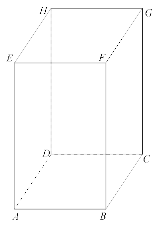

Jesteś tutaj: Matura
podstawowa - kurs - część 58 - zadania
Matura podstawowa - kurs - część 58 - zadania
Cały kurs na: ./matematyka-matura-podstawowa-kurs.html.
Sześcian o krawędzi \(6\) przecięto płaszczyzną zawierającą przekątną dolnej
podstawy i jeden wierzchołek drugiej (patrz rysunek). Oblicz pole otrzymanego przekroju. 
\(P=18\sqrt{3}\)
Dany jest graniastosłup prawidłowy czworokątny \(ABCDEFGH\) o krawędzi podstawy
długości \(4\sqrt{2}\) oraz krawędzi bocznej równej \(8\). Graniastosłup przecięto płaszczyzną
przechodzącą przez środki krawędzi \(AD\) i \(DC\) oraz przez wierzchołek \(H\) (zobacz rysunek).
Oblicz pole otrzymanego przekroju. 
\(4\sqrt{17}\)
Graniastosłup prawidłowy czworokątny \(ABCDEFGH\) o krawędzi podstawy długości
\(5\) oraz krawędzi bocznej długości \(5\sqrt{6}\) przecięto płaszczyzną przechodzącą przez
wierzchołek \(A\) oraz punkty \(L\) oraz \(J\) leżące na przeciwległych krawędziach bocznych w
równych odległościach od dolnej podstawy. Otrzymany przekrój jest czworokątem \(AJKL\), którego
przekątna \(AK\) tworzy z płaszczyzną podstawy kąt \(\alpha \) (zobacz rysunek). Zapisz pole tego
przekroju w zależności od kąta \(\alpha \). Jakie wartości przyjmuje \(\alpha \)? 
\(\frac{25}{\cos \alpha }\)